Coffee / Models / Stories
喝一杯咖啡，
走进收藏的故事。
从入口吧台，到半开放拼装、修复观察、故事回廊与珍藏馆。打开同一套空间模型，按视点查看各区域如何连接。
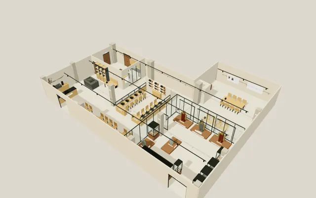
353.4㎡整体面积参考
30席咖啡与阅读
10席半开放拼装
12视点整体与室内关系
本版为平面设计核对与空间示意，尚未定稿。现场墙垛、柱净面及上翼进深仍待实测；353.4㎡为现有图纸参考面积。展品编号体量表示陈列位置，实际藏品和修复档案按资料补齐。
从这里开始看空间
点选视点进入 · 拖动画面转头 · 各视点共享同一套布局
00进入视点 ↗
总览 · 统一平面
从整体看分区、柱位与区域连接。
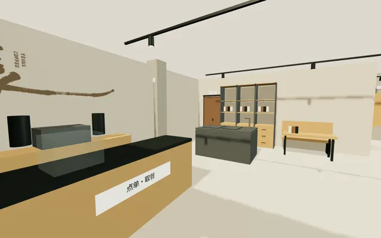
01进入视点 ↗入口与主吧
站在咖啡主入口内，看左侧主吧。
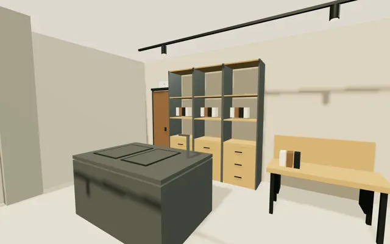
02进入视点 ↗特调与三联柜
门在左、三联柜在右，特调岛在前。
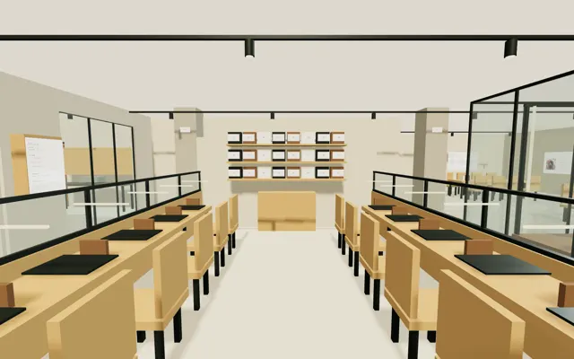
03进入视点 ↗半开放拼装
两侧共10席，干式拼装与盒装模型售卖。
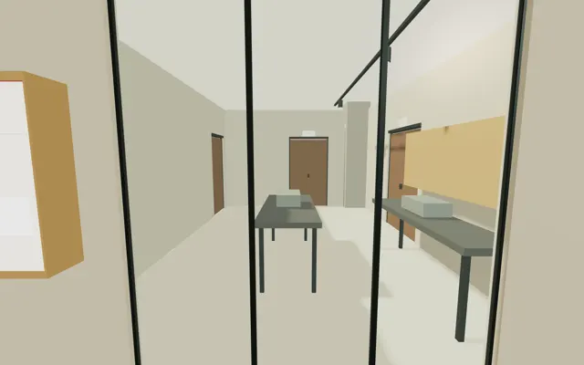
04进入视点 ↗隔玻璃看修复
开放日隔玻璃观看，工作区不对客进入。
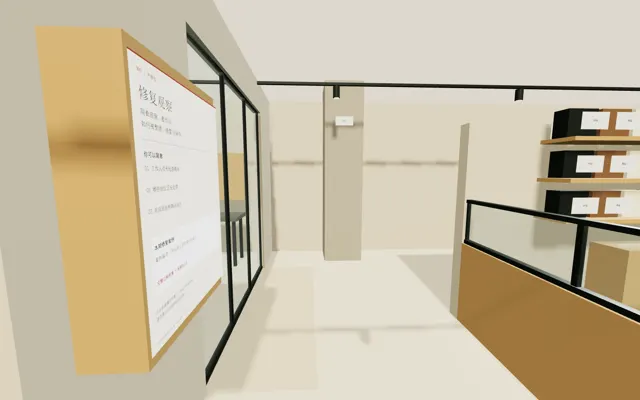
05进入视点 ↗停看与公共通行
靠窗停看与公共通行分别安排。
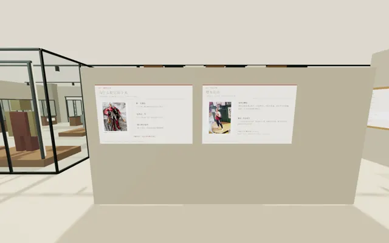
06进入视点 ↗回廊 · 作品与收藏故事
作品身份、收藏故事与制作过程。
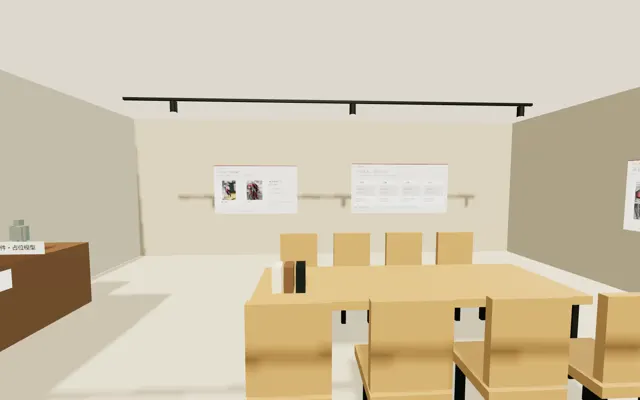
07进入视点 ↗阅读 · 收藏与修复档案
收藏档案、修复前后与图册阅读。
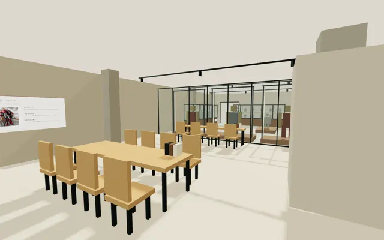
08进入视点 ↗阅读 · 隔玻璃观展
阅读交流，并隔玻璃观看珍藏。
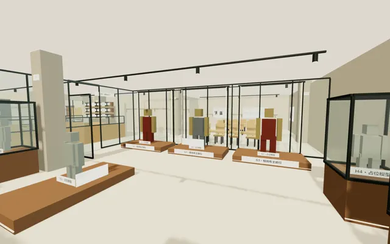
09进入视点 ↗珍藏 · 三格纳库位
三组格纳库主题位与珍贵模型陈列。
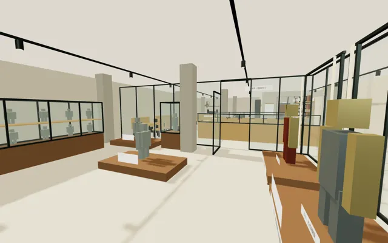
10进入视点 ↗珍藏 · 内门联系咖啡
通过内门联系咖啡与公共区域。
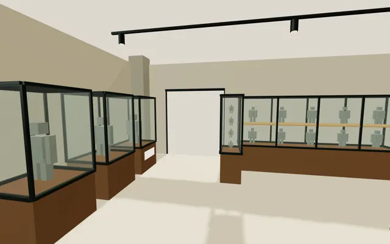
11进入视点 ↗珍藏 · D03独立外门
保留珍藏馆的独立外门。
平面与完整图册
查看尺寸、空间用途、故事图文与本轮核查记录。